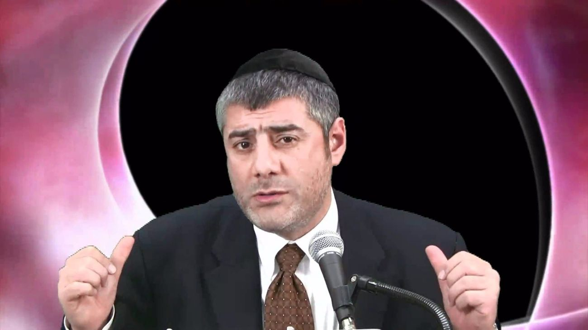

For more than three decades, Rabbi Yosef Mizrachi has used direct Torah teaching, live events, film and digital outreach to help Jews reconnect with Torah, mitzvot and Hashem.

Born in Israel in 1968, Rabbi Mizrachi served in the Israeli Air Force before moving to New York. After working in Manhattan’s financial district, he dedicated himself to full-time Torah outreach in 1994. The Rabbi Mizrachi Kiruv Organization was founded in 1995.
His outreach has grown through lectures, events, films, yeshiva and kollel activity, livestreams, an app and a large online lecture archive.
RavMizAI is designed as an entry point into the public teaching archive: ask naturally, clarify the idea, then continue into the original lectures and source material.
Try RavMizAI →Rabbi Yosef Mizrachi is an Orthodox Jewish kiruv rabbi and the founder of Divine Information. His public biography describes more than three decades devoted to Torah outreach, including thousands of lectures, live events, films, digital teaching and international audiences. His style is known for being direct and for addressing practical questions of belief, observance, identity and return to Torah.
Divine Information is Rabbi Mizrachi’s public Torah and kiruv platform. It organizes access to lectures, short-form clips, films, events and related teaching material. RavMizAI is intended to complement that library rather than replace it: the AI can help a user formulate or explore a question, while Divine Information remains the destination for the original public teaching and source context.
The lecture archive is the source library; RavMizAI is the conversational layer on top of that experience. Instead of knowing which lecture to search for, a member can begin with a natural-language question, ask follow-ups and clarify terminology. When a subject becomes important, the best next step is to return to the original lecture or Torah source so the idea is understood in its full context.
No. RavMizAI can help explain ideas, summarize public teachings and create a useful starting point for discussion, but it cannot know every personal fact that may change a halachic answer. Personal rulings should come from a qualified rabbi. Likewise, medical, legal, mental-health and financial decisions should be handled with the appropriate licensed professional rather than relying on an AI conversation.